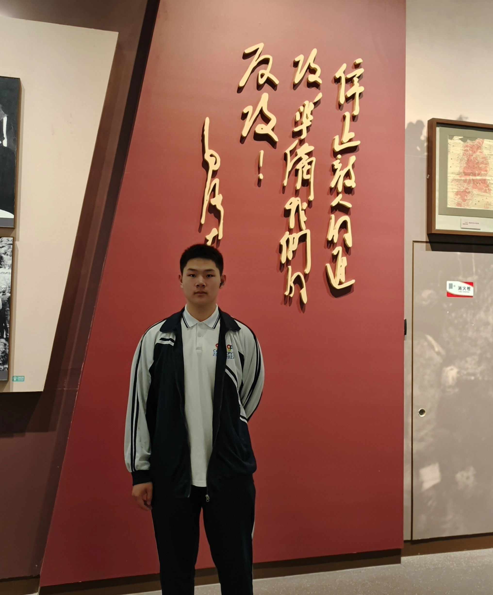

关于我

姓名:丰志远
性别:男
爱好:听歌 写代码 羽毛球
性格 :开朗
家乡:北京
职业:大数据专业学生
个人简介
我叫丰志远，是一名大数据专业的中职学生。我想继续分享我的大一学习经历。 在大一的学习过程中，我不仅通过课堂学习，还组织了一个团队。我们团队合作的目标是利用大数据技术解决一个真实世界的问题。
在团队合作的过程中，我学会了与他人有效地合作和沟通，发现了每个人的优点和潜力。我们共同面对了项目中的挑战和困难，通过协作和解决问题，最终取得了很好的成果。 这一年的学习经历让我深刻理解了大数据在现实生活中的应用和重要性。
我期待着继续深入学习和实践，不断提升自己在大数据领域的专业技能。希望将来能够成为一名优秀的大数据工程师，为社会的发展和创新做出贡献。